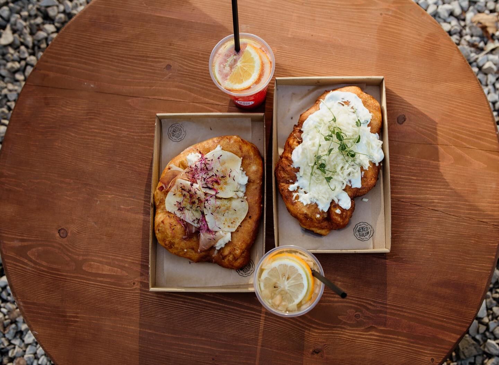
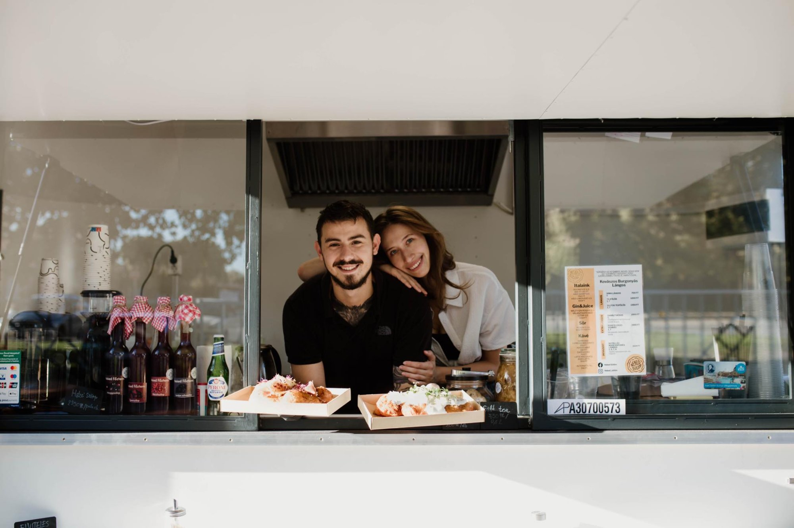

„Szegény az az ember, akivel soha nem ült szemközt asszony, hogy szerelemmel figyelje, amint eszik."


A Neked Sütöm egy olyan hely, ahol a friss lángos illata és a jó hangulat alap. Hiszünk benne, hogy egy igazán jó lángos nemcsak étel, hanem élmény: ropogós szélek, puha belső, bőséges feltét és egy mosoly a pult mögül.
Baján, a Dr. Alföldi József téren találsz minket — egy kis hely, ahol nagy szeretettel sütjük a lángosokat. Minden egyes adagnál ugyanolyan gondossággal és odafigyeléssel dolgozunk, mintha számodra sütjük, mert valóban így van.
Kínálatunk folyamatosan bővül: a klasszikus sima lángostól kezdve az elegáns Fekete Erdő Sonkásig, a Láng-Dogtól a házi szörpökig és matcha italokig — mindig van valami új a felfedezésre.
Minden lángost frissen sütünk, naponta. Nincs előre elkészített tészta, nincs kompromisszum.
Minőségi alapanyagokkal, odafigyeléssel — mert egy egyszerű étel is lehet nagyszerű.
Egy igazán jó lángos nemcsak étel, hanem élmény. Ropogós szélek, puha belső, mosoly a pult mögül.
„Szegény az az ember, akivel soha nem ült szemközt asszony, hogy szerelemmel figyelje, amint eszik."
„Ők az ékes példája annak, hogy minőségi alapanyagokkal, odafigyeléssel egy egyszerű étel is lehet nagyszerű."
„Nagyon színvonalas hely! Életem lángosát fogyasztottam itt, nem tudtam, hogy »egy lángos« képviselhet ilyen értéket!"
„Ha az ember nem ájult el a legcukibb kiszolgálástól, akkor a kajától tuti el fog. Isteni volt, köszönjük, jövünk még! 😋"
Baja, Dr. Alföldi József tér 1 — vagy rendeld meg Wolton és Foodorán.